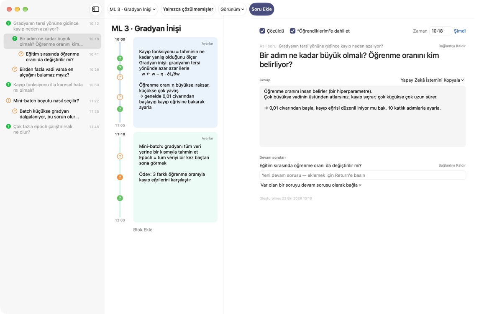
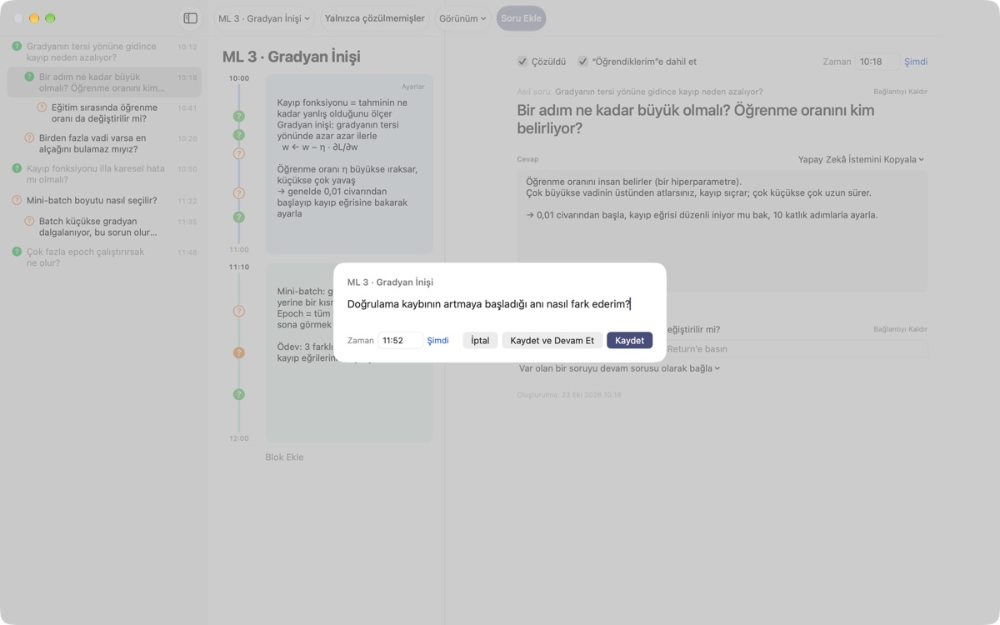
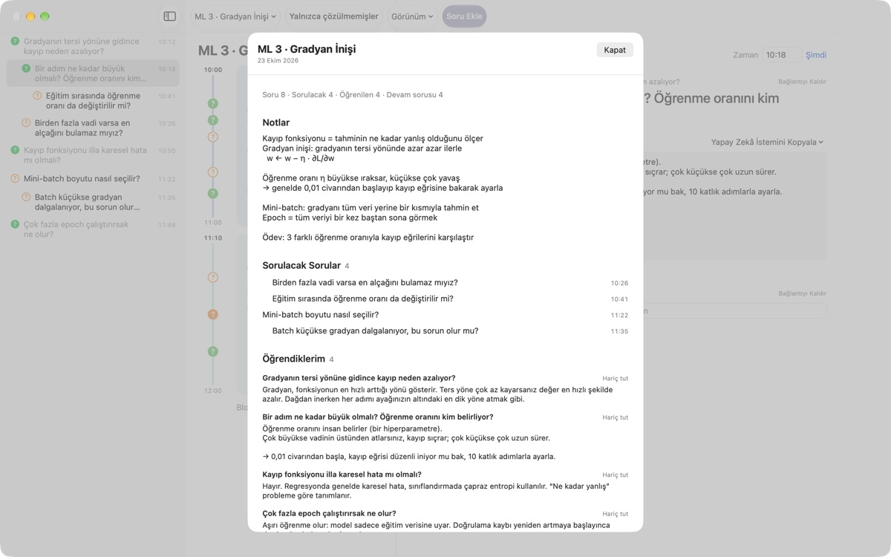
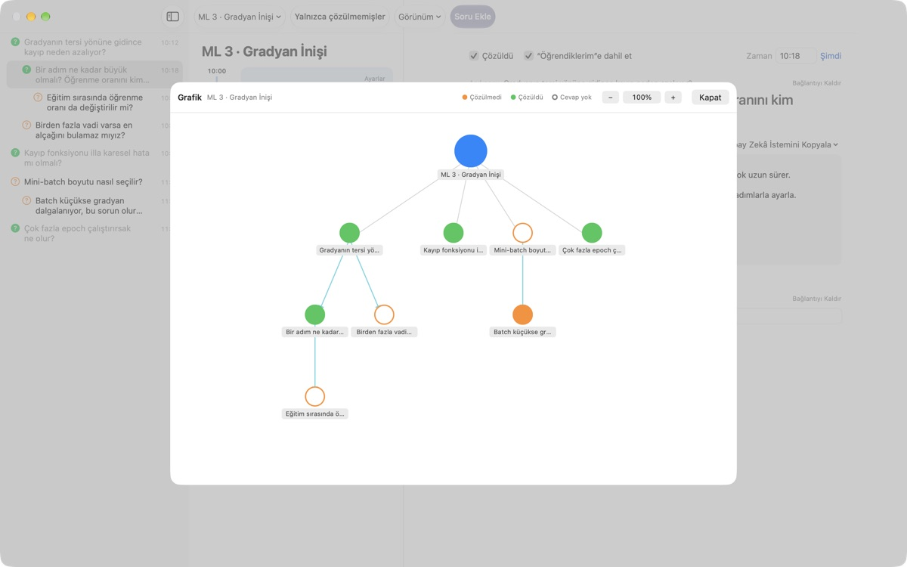

Dersteki hiçbir soru
artık aklından uçmasın
⌘⇧N tuşuna bas, bir satır yaz; soru tam o dakikanın notlarının yanına düşer. Sen dinlemeye devam edersin, cevabı sonra bulursun.
macOS 14 veya sonrası için. Hesap yok, her şey bu Mac'te kalır.

Burada dene
Bir makine öğrenmesi dersinin ortasındasın. Bir soru yazıp kaydet: o saatin bloğunun yanında bir ? belirir. Saati blokların dışına alırsan onu kapsayan yeni bir blok oluşur.
Ders bitince sorunu hâlâ hatırlıyor musun?
Daha "dur, neden ki?" diye düşünürken hoca bir sonraki konuya geçmiş olur. Kenara attığın soru işareti hangi anlatımdan çıktığını unutur ve soru cevapsız kalır. LectureQ her soruyu o anki notlarına iliştirir ve sen çözene kadar gözünün önünde tutar.
Bir sonraki cümleyi kaçırmadan sor
Giriş penceresini araç çubuğundaki Soru Ekle ile ya da ⌘⇧N ile aç. Saat kendiliğinden dolar. Return kaydeder, ⌘Return kaydedip hemen sıradakine hazırlar.
Her soru kendi zaman bloğunun yanında bir ? olarak görünür; böylece sonra dersin hangi bölümünden çıktığını hemen görürsün.

Çözülen soru öğrendiğin şeye dönüşür
Cevabı kendi cümlelerinle yaz, soruyu çözüldü olarak işaretle; özetteki Öğrendiklerim'e geçer. Hâlâ açık olanlar Sorulacak Sorular'da kalır, bir sonraki derse götüreceğin liste kendiliğinden oluşur.
Soru ayrıntısındaki Yapay Zekâ İstemini Kopyala, ders adı ve o anki notlarınla doldurulmuş hazır bir istemi panoya koyar. Zaten kullandığın yapay zekâ hizmetine yapıştırman yeterli.

Düşüncenin nereye gittiğini gör
Devam soruları çıktıkları sorunun altına girintili dizilir, grafik de onları oklarla bağlar. Bir düğüme tıklayınca doğrudan o soruya gidersin.
Öğrenme Durumu'na şu an nerede olduğunu, kurs bitince nerede olmak istediğini ve ne öğrenmek istediğini yazıp karşılaştırabilirsin.

Başlamak için üç adım
- 1
Bir ders oluştur
Araç çubuğunun solundaki ders menüsünden ekle ya da Markdown olarak kaydedilmiş bir sohbeti içe aktar.
- 2
Aklına gelince hemen yaz
⌘⇧Ntuşuna bas. Tek satır yeter, saat zaten dolu. - 3
Sonra cevapla
Cevabı yaz ve ? işaretine tıklayıp çözüldü olarak işaretle. Öğrendiklerim'e taşınır.
Klavye kısayolları
- ⌘⇧N
- Soru ekle
- Return
- Kaydet
- ⌘Return
- Kaydet ve sıradakini yaz
- Esc
- Vazgeç
- ⌘1
- Özet: sorulacak sorular, öğrendiklerin, notlar
- ⌘2
- Grafik: asıl sorular ve devam soruları
- ⌘3
- Zaman Blokları: tüm derslerin blokları zaman sırasıyla
- ⌘4
- Öğrenme Durumu
- ⌘+ · ⌘- · ⌘0
- Yazı büyüt, küçült, varsayılan boyut
Hepsi Görünüm menüsünde de var.
Tüm özellikler ücretsiz
Ücretsiz
- Hızlı soru ve zaman bloğu notları
- Devam soruları ve grafik
- Özet, zaman blokları görünümü ve Öğrenme Durumu
- Beş adımlı yapay zekâ istemleri, panoya kopyalanır
- Markdown'dan sohbet içe aktarma
Geliştiriciye destek ol
- Uygulama işine yarıyorsa Ayarlar'dan küçük bir bahşiş gönder
- Bahşiş ekstra bir şeyin kilidini açmaz
Bahşiş versen de vermesen de her şey aynı çalışır.
Reklam yok, hesap yok. Notların bu Mac'te kalır.
Sık sorulan sorular
? işaretinin renkleri ne anlama geliyor?
Listede içi boş turuncu daire henüz çözülmemiş, içi dolu yeşil daire çözülmüş bir soru demektir. Değiştirmek için ? işaretine tıkla; yalnızca açık soruları görmek için araç çubuğunda Yalnızca çözülmemişleri aç. Zaman bloğunun yanında renk sorunun çözülüp çözülmediğini, dolu daire de bir cevap yazıldığını gösterir.
Zaman blokları nasıl çalışır?
Blok Ekle ile o anda yeni bir blok başlar, önceki de orada biter. Hiçbir bloğun kapsamadığı bir saatte soru yazarsan çevresinde bir blok oluşturulur. Bloğun sağ üstündeki Ayarlar ile rengini, başlangıcını ve süresini değiştirir ya da onu silersin. Bir bloğu kendin silersen o ders artık otomatik blok oluşturmaz.
"Çözüldü" ile "Öğrendiklerim" arasındaki fark ne?
Soru ayrıntısında Çözüldü kutusunu işaretlediğinde, sorunun Öğrendiklerim'e dahil olup olmayacağını da seçersin. Orada yalnızca dahil ettiğin çözülmüş sorular görünür. Özetten de çıkarıp geri ekleyebilirsin; cevap yerinde kalır.
Yapay zekâ istemleri nasıl çalışır?
Soru ayrıntısında Cevap'ın yanındaki Yapay Zekâ İstemini Kopyalayı aç ve bir adım seç: Soruyu Netleştir, Cevabı Bul, Cevabı Sorgula, Devam Sorularını Çıkar ya da Cevabımı Puanlat. Ders adı, o anki notların, öğrenme durumun ve asıl soruyla doldurulmuş bir istem panoya kopyalanır. İstem metni şimdilik Korece; yapay zekâ hizmetlerinin çoğu yine de anlar, cevabı Türkçe vermesini isteyebilirsin. Cevabını puanlatmak için önce kendi cevabını yazmış olman gerekir. Uygulama hiçbir zaman kendi başına bir yapay zekâ hizmetine bağlanmaz.
Markdown olarak kaydedilmiş bir sohbeti içe aktarabilir miyim?
Ders menüsünden Markdown’dan İçe Aktar… seç. # Başlık dersin adı olur; her ## Bölümde ilk soru asıl soru, sonrakiler devam sorularıdır. Dosyada ilk konuşan kişinin söyledikleri soruya, diğerlerininkiler bir önceki sorunun cevabına dönüşür. Asıl dosya hiç değişmez.
Bir soruyu ya da dersi nasıl silerim?
Listede soruya sağ tıklayıp Sili seç. Bir ders için ders menüsündeki Geçerli Dersi Sili kullan; soruları ve blokları da onunla gider. Bu geri alınamaz, önemli olanları önce yedekle.
Verilerim nerede tutuluyor, nasıl yedeklerim?
Her şey bu Mac'te kalır, hiçbir yere yüklenmez. Yedeklemek için uygulamadan çık ve ~/Library/Containers/com.lectureq.LectureQ/Data/Library/Application Support/LectureQ/ klasörünü -wal ve -shm dosyalarıyla birlikte olduğu gibi kopyala. Uygulama yalnızca sürüm ve açıldığı günler gibi anonim kullanım istatistikleri gönderir, yazdıklarını asla.
Yazılar çok küçük.
⌘+ büyütür, ⌘- küçültür, ⌘0 varsayılana döndürür. %85 ile %200 arasında ayarlanır ve tercihin hatırlanır.
Hangi Mac'lerde çalışır?
macOS 14 veya sonrası yüklü her Mac'te. Kaynak kodu GitHub'da M1zz/LectureQ adresinde herkese açık.
Bir şey çalışmıyor. Kime bildireyim?
Uygulamanın Ayarlar'ından (⌘,) geri bildirim gönder ya da aşağıdaki adrese yaz. macOS sürümünü ve o sırada ne yaptığını yazarsan daha hızlı bakabiliriz.
Sorun ya da önerin mi var? mizzking75@gmail.com adresine yaz.